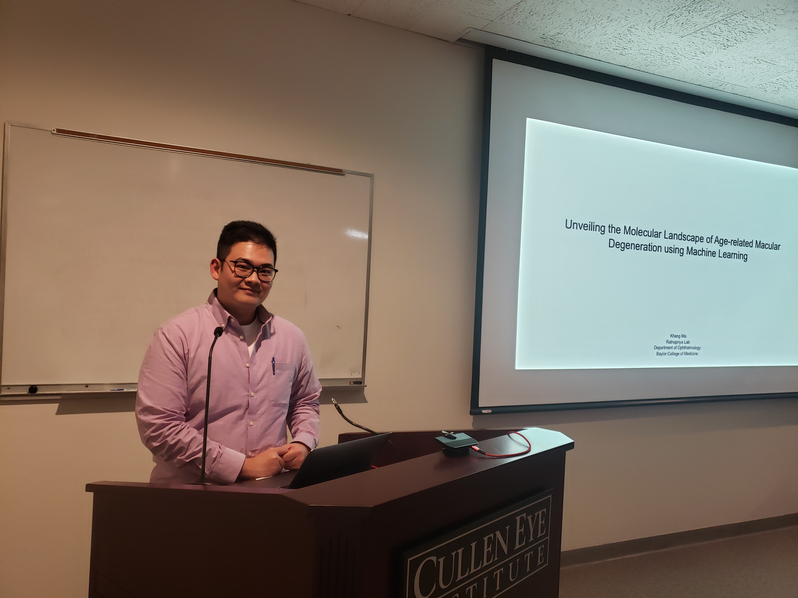
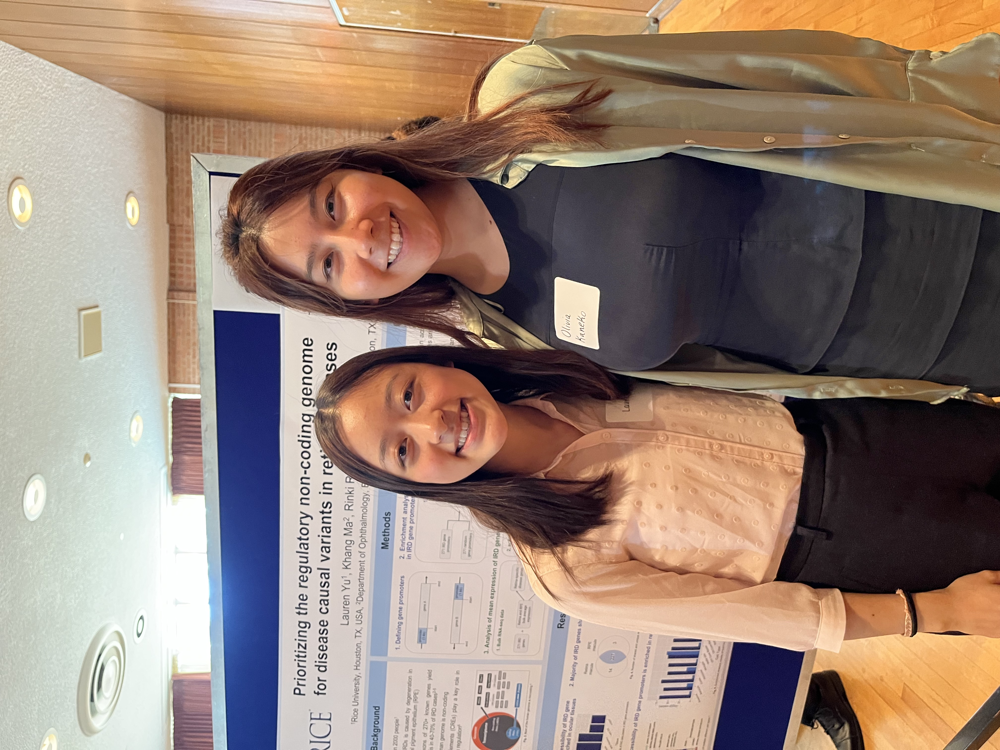

Lab News & Highlights
- May 2025: Khang’s paper was accepted in Genomic Medicine. Congratulations, Khang!
- May 2025: Rinki’s review on functional genomics approaches in age-related macular degeneration was published.
-
March 2025: Rinki was invited to lead the multi-omics group at Ryan Initiative for Macular Research Conference.

- March 2025: Vandana Venkatesh joined the lab as part of the SOAR (Student Opportunities for Advancement in Research) program. Welcome, Vandana!
- December 2024: Ajeet’s paper was accepted for publication in Human Molecular Genetics. Congratulations, Ajeet!
- August 2024: Two new members joined the lab: Pinal Koladiya as a research technician and Anika Kulkarni as an undergraduate researcher. Welcome, Pinal and Anika!
- May 2024: Rinki was selected for the 2024–2025 class of the Women’s Leadership Development Program by ARVO. Congratulations!
- April 2024: Rinki was invited to participate in the Ryan Initiative for Macular Research as an AMD expert.
-
Feb 2024: Khang Ma presented his machine-learning work at Departmental Trainee seminar.

-
September 2023: Lauran Yu and Olivia Kaneko presented their work at Rice Undergraduate Research Symposium.

- March 2023: Ajeet Singh joins the lab as a postdoctoral researcher. Welcome, Ajeet!
- March 2023: Rinki was invited to speak at the “Emerging Horizons in Retinal Genetics, Biology, and Disease” Symposium, hosted by the National Eye Institute (NEI).
- December 2022: Rinki joined the editorial board of Molecular Vision.
-
August 2022: Rinki traveled to Washington, D.C., to participate in the Emerging Vision Scientist (EVS) Program, advocating for vision research on Capitol Hill.

- July 2022: Khang Ma joined the lab as a research technician. Welcome, Khang!
- July 2022: We received an Individual Investigator Research Grant from the Foundation Fighting Blindness to study inherited retinal disease networks.
- June 2022: Lab was awarded the BCM Junior Faculty Seed Award from Baylor College of Medicine.
- November 2021: Hosei Nakajima joined as our bioinformatics analyst. Welcome, Hosei!
- October 2021: Lauren Yu joined the lab as an undergraduate research assistant. Welcome, Lauren!
- August 2021: Our new publication reporting a novel ARL3 gene mutation associated with autosomal dominant retinal degeneration is now out—congratulations to the team!
- July 2021: Rinki received a Career Development Award from Research to Prevent Blindness.
- April 2021: We received our first research funding with a New Investigator Grant from the BrightFocus Foundation.
Contact
Social
© 2025 RatnapriyaLab. All rights reserved.